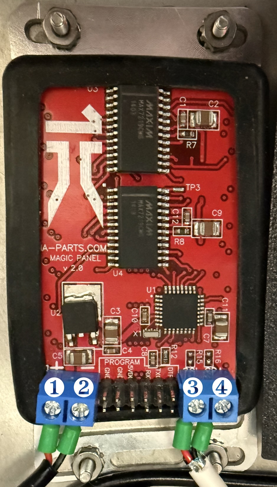

Wiring¶

Power¶
5 V regulated. The panel draws most when every LED is lit (for example On 5s or Alert); size the supply for that.
I2C bus¶
| Signal | Pin | ATmega328P pin | Notes |
|---|---|---|---|
| SDA | ❹ | A4 (PC4) | |
| SCL | ❸ | A5 (PC5) | |
| GND | ❷ | GND | always connect ground to the controller |
| 5 V | ❶ | 5 V | if the panel is powered from the bus |
The pin column matches the marked pins in the image above.
- Address:
0x14(20 decimal). It is fixed. - Speed: 100 kHz. 400 kHz has not been tested.
- Levels: 5 V. A 3.3 V controller (Raspberry Pi, ESP32) needs a level shifter.
- Pull-ups: the panel enables the ATmega's weak internal pull-ups only. Most droid controllers provide 4.7 kΩ pull-ups; if yours does not, add them once on the bus (not on every device).
- Keep the bus short (under about 1 m in a dome); long ribbon runs next to motor wiring cause errors.
Rotary switch and jumpers¶
The panel reads a 3-bit rotary switch and two jumpers to choose a show to run on its own. All inputs are active-low with internal pull-ups; a jumper connects its pin to the neighbouring ground pin (D12).
| Input | Pin | Effect |
|---|---|---|
| Rotary bit 4 | A0 | code + 4 |
| Rotary bit 2 | A1 | code + 2 |
| Rotary bit 1 | A2 | code + 1 |
| Jumper 1 | D11 (to D12) | code 8, overrides the rotary switch |
| Jumper 2 | D13 (to D12) | code 9, overrides everything |
What each code runs: Standalone operation. A new position counts once it has been steady for 20 ms, so turning the switch through other positions does not start them.
Orientation¶
Patterns are drawn exactly as firmware v010.5 drew them, which is the right way up for a panel installed the usual way in a dome: Trace down runs top to bottom and Test pixel starts at the top right. Held on the bench the other way up, the same panel shows everything rotated 180°.
If your panel is installed the other way up, turn the picture with the ORIENTATION register and
save it, so it stays turned after power-off:
| Step | Bytes |
|---|---|
| Turn the picture 180° | [0xB2, 1] |
| Keep it after power-off | [0xBF, 0xA5] |
| Back to normal | [0xB2, 0], then [0xBF, 0xA5] |
The change shows from the next frame drawn (start any pattern to see it). Details: configuration.